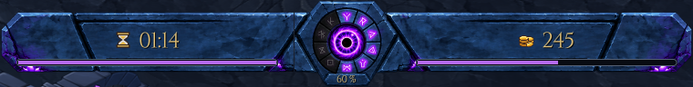
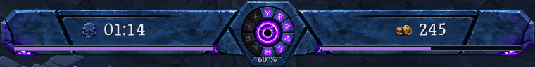
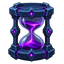
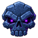
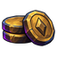
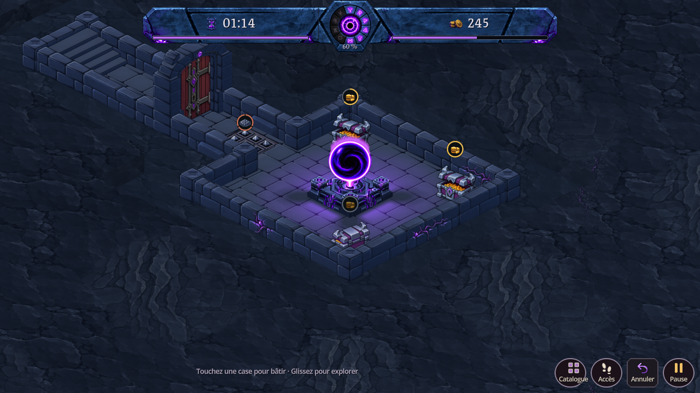
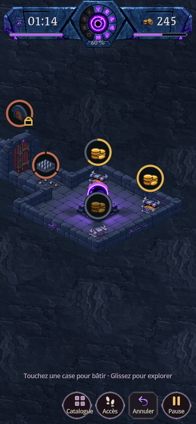
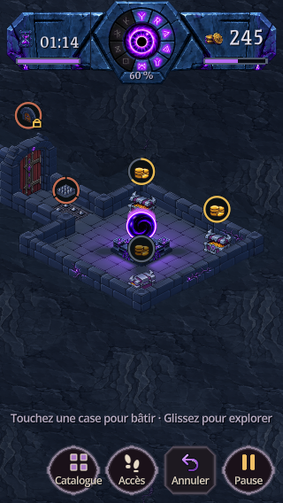
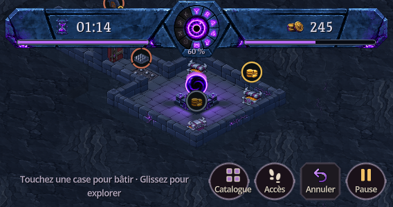

Chiffres ivoire froid plus épais, sablier de pierre corrompue, crâne de danger pendant le raid et pièces patinées. Les formes du bandeau C, ses dix runes et ses jauges violettes sont conservées.









Trois icônes peintes avec ImageGen, préparées en PNG de 64 pixels : 25 ko au total. Les chiffres restent du texte natif. Police Grenze, en gras et avec des chiffres alignés de largeur fixe. 856 contrôles natifs passent ; cinq formats capturés. Pas de nouveau test sur téléphone ni d’APK.
Sources, prompts et préparation · Contrôles · Budget des ressources